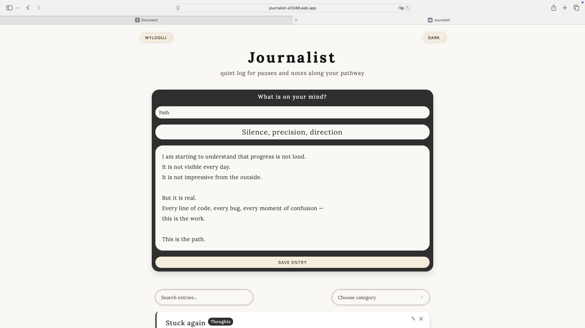
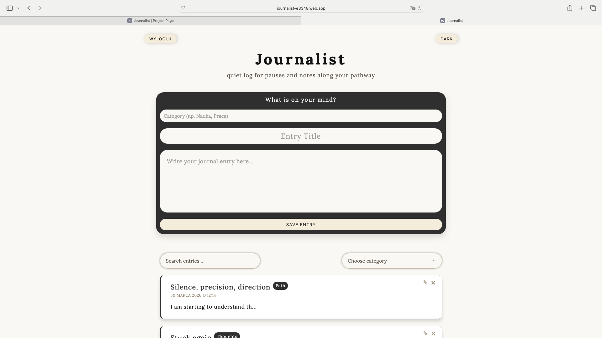
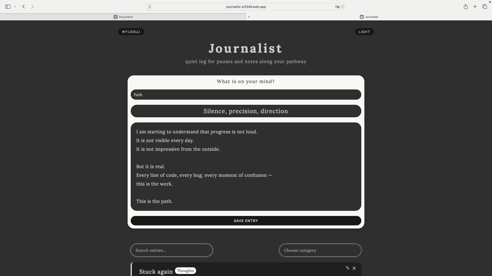
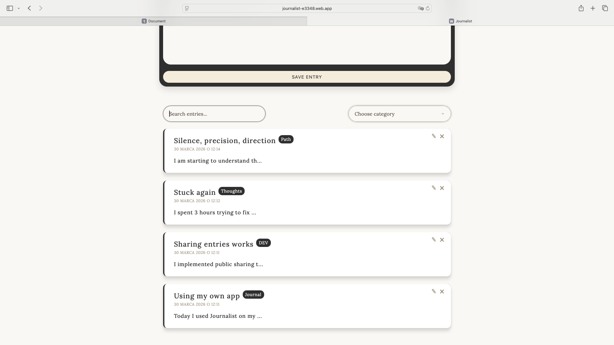
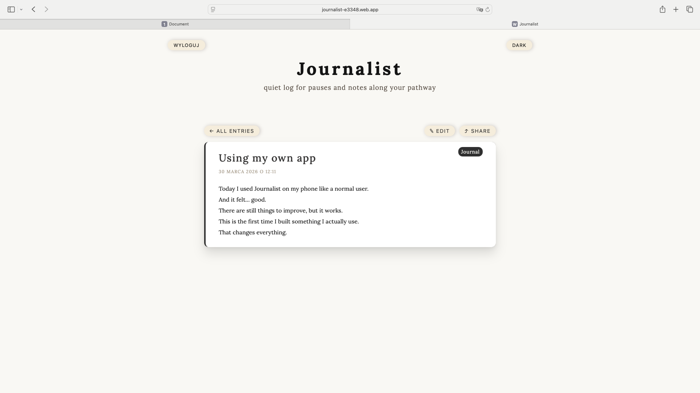
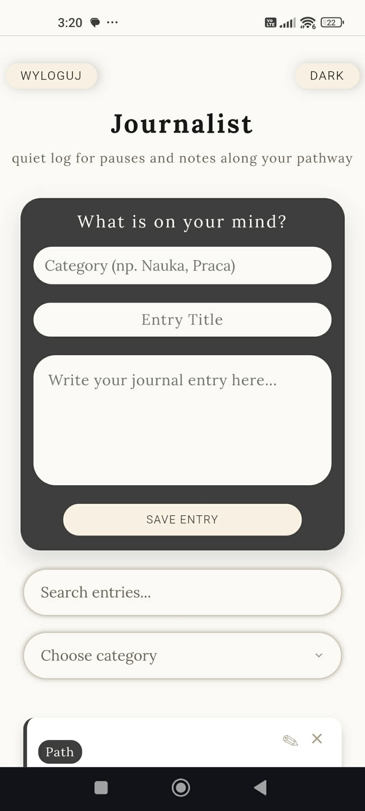
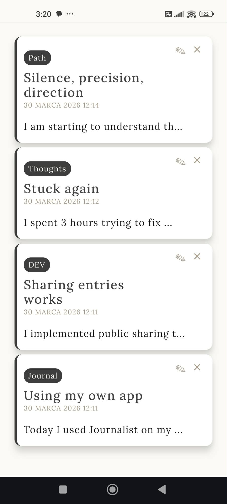
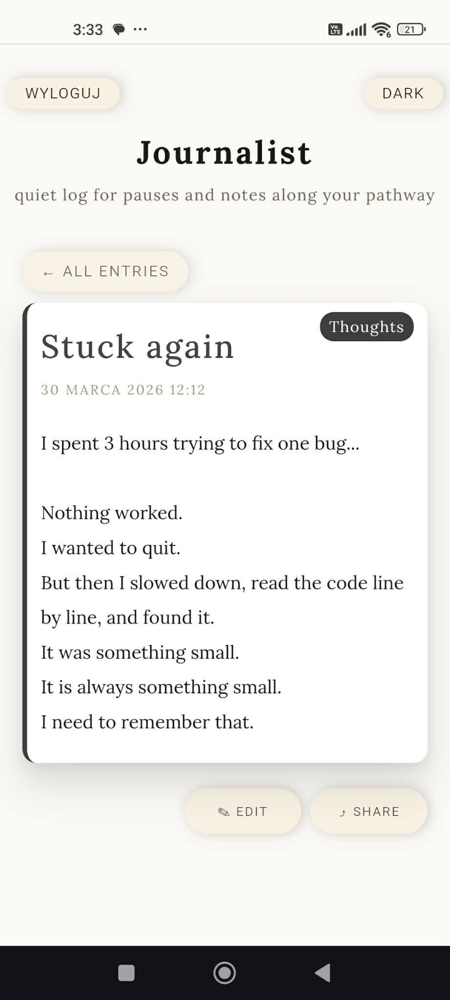

Portfolio Project
Journalist
Minimalist journaling app built with Vanilla JavaScript and Firebase, focused on clarity, writing flow and mobile-first UX.
Journalist is the first application I built that I actually use in real life. What started as a learning project became a complete product with authentication, persistent data, public sharing and refined mobile UX.
Desktop preview





Mobile experience
Journalist was heavily polished for smaller screens. I tested it on different phones and improved spacing, touch interactions, detail view layout and editing flow.



What it does
Users can log in with Google, create and edit entries, organize them by category, search through content, open a full detail view and share selected entries via public links.
What made it important for me
This was the first project where I stopped thinking only about writing code and started thinking about building a complete application. I had to deal with state, rendering, data flow, authentication, edge cases and mobile behavior.
Main challenges
- Firebase authentication flow on desktop vs mobile
- URL-based navigation and public shareable entries
- Dynamic rendering and event binding after innerHTML updates
- Mobile textarea behavior and scroll jumping
- Long text wrapping and layout stability